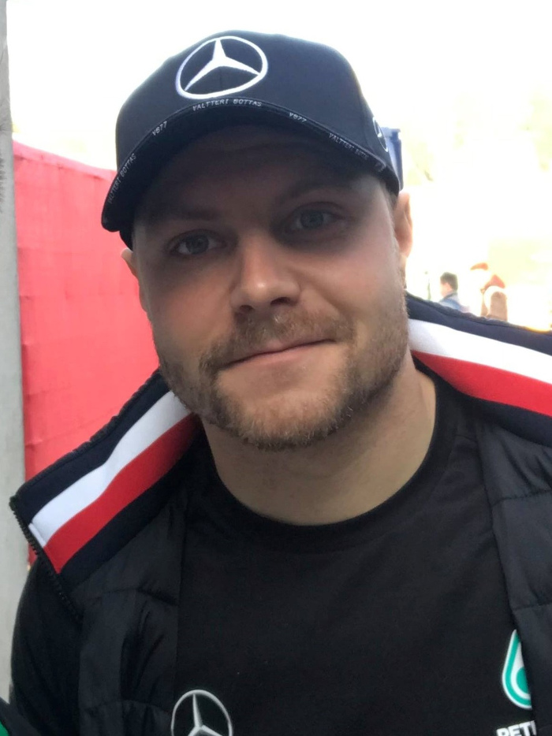
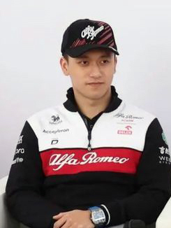

História
A Alfa Romeo está atualmente envolvida na Fórmula 1 como equipe e construtor sob o nome Alfa Romeo F1 Team Stake. A equipe que compete sob uma licença suíça está sediada em Hinwil, Suíça e é operada pela Sauber Motorsport AG. A marca competiu nas corridas de automóveis como construtor e fornecedor de motores esporadicamente entre 1950 e 1987, e posteriormente como parceira comercial a partir de 2015. Os pilotos da empresa conquistaram os dois primeiros Campeonatos Mundiais de Pilotos: Giuseppe Farina em 1950; e Juan Manuel Fangio em 1951. Após estes sucessos, a Alfa Romeo se retirou da Fórmula 1.
A marca Alfa Romeo retornou para a Fórmula 1 na temporada de 2018 como patrocinador título da equipe Sauber. Em 1 de fevereiro de 2019, a Sauber mudou seu nome de construtor para Alfa Romeo Racing, porém, a propriedade e a administração da equipe permaneceram inalteradas e independentes.
Pilotos
-
Valtteri Bottas
- Nacionalidade: Finlândia
- Idade: 32 anos
- Corridas: 208
- Vitórias: 10
- Pódios: 67
- Campeão: 0 vez
-
Zhou Guanyu
- Nacionalidade: China
- Idade: 24 anos
- Corridas: 30
- Vitórias: 0
- Pódios: 0
- Campeão: 0 vez
*Dados do dia 26/06/2023